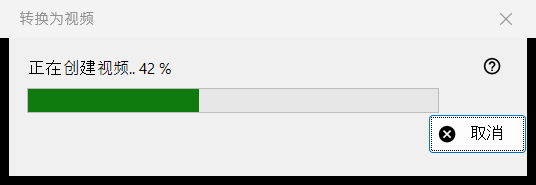
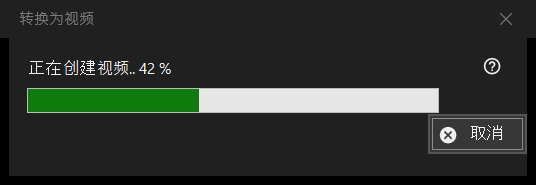

转换为视频
用途说明
「转换为视频」的进度窗口：它把动画 GIF、WebP 或 APNG 转成 MP4，然后删除原文件。它在您确认转换后打开，在工作结束前一直位于查看器上方，只有一个按钮「取消」。


操作顺序
- 显示一张动画图片。
- 在图片菜单中选择「转换为视频..」，或点击工具栏的「转换为视频」按钮；两者只在屏幕上有动画时才存在，也没有键盘快捷键。
- 阅读确认提示，点击「转换」。
- 如果提示下载 FFmpeg，请选择「是」。
- 观察进度条，或点击「取消」。
- 查看器会打开新的 MP4。
界面元素
开始转换
该命令只对动画提供，静态图片或视频不会出现；对于受保护的容器，或文件旁边无法写入的位置，查看器会拒绝执行。工作开始时播放会停止。
确认提示
提示内容是：原文件将被转换为新的 MP4，原文件会被永久删除，不经过回收站。如果动画带有透明度，还会补充：「透明区域将被填充为黑色。」默认答案是「取消」。复选框「在程序关闭前不再询问」只在查看器关闭前有效，从不保存。
FFmpeg
转换使用 FFmpeg，它不是本程序的一部分。如果缺少它，会询问一次是否下载（提示中显示大小；文件来自项目网站，保存在本地，是遵循 GPL 的自由软件）。回答「否」会就此停止，不会创建或删除任何内容。
进度窗口
标题显示「正在创建视频..」和百分比，进度条随之前进。当动画的长度未知时，进度条只会来回移动，不显示数字。「取消」、Esc 键和关闭按钮的含义相同：窗口会停留片刻，直到编码器真正停止，然后关闭，查看器提示「转换已取消」。在此期间无法使用查看器。
转换结果
在同一文件夹中生成同名的 MP4（名称被占用时会加上括号中的数字），帧率与动画一致，限制在每秒 1 到 50 帧之间。它先以临时名称写入，完成后再重命名。只有在 MP4 已以最终名称存在，并且检查确认它包含完整动画之后，才会删除原文件。状态栏显示「完成」，查看器随后显示该视频。
出错时
原文件会保留，状态栏说明原因：无法创建视频（附原因）、视频已创建但无法删除原文件，或无法确认视频是否完整而保留了原文件。失败的运行不会改动原文件，会删除临时文件，并把详细信息写入日志。